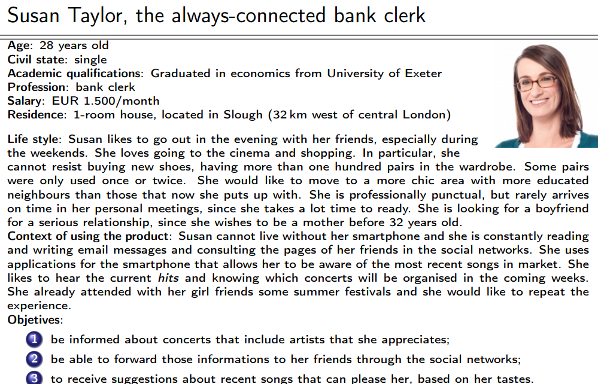
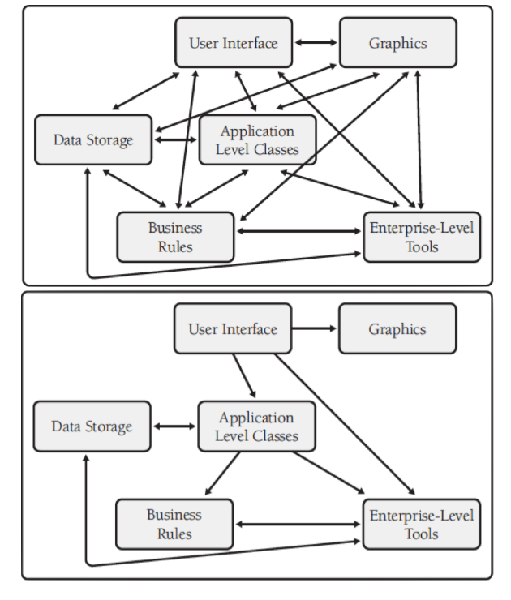
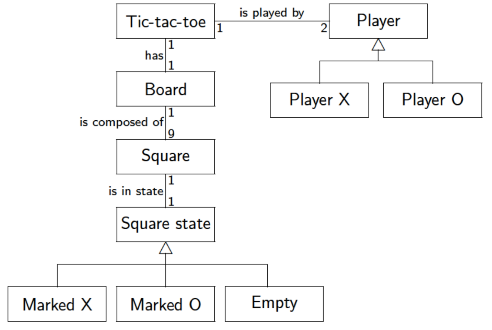

Teórica 01
Ciclo de Vida de Desenvolvimento
Análise → Conceção da Solução → Programação
Sendo que a fase de Teste deverá ocupar todo o ciclo do desenvolvimento.
Produtos/Serviços vs Sistemas
Produtos/Serviços:
- Vão para o Mercado (mass market);
- Serão utilizados por muita gente;
- Recusam requisitos "estranhos", visto que têm como público-alvo uma grande quantidade de pessoas.
Sistemas:
- Restringidos e feitos à medida da equipa que pretende utilizar o sistema;
- Cumprem todos os requisitos da equipa.
Avaliação da UC
\[ 0.6*teste/exame + 0.4*projeto \]
- Nota mínima de 8 valores no teste (não arredonda);
- Nota mínima de 9.5 valores no trabalho.
- Os grupos de 3 têm bonificação de 0.3 e os grupos de 4 têm bonificação de 0.2.
Teórica 02
Requisito
- Uma necessidade de alguém;
- Utilizado no contexto de um sistema que ainda não está construído;
- Quando estiver finalizado passar a ser uma feature do sistema.
Tipos de Requisitos:
- De Sistema: aquilo que a comunidade precisa;
- De Utilizador: a solução para aquilo que a comunidade precisa.
Classificação de Requisitos:
- Funcionais;
- Não-funcionais.
No entanto, esta classificação não é rigorosa, sendo subjetiva de pessoa para pessoa.
NOTA:
- Requisito Candidato: Um requisito que será negociado.
Requisitos Funcionais
- Funcionalidade que será disponibilizada aos utilizadores do sistema;
- Não devem, se possível, mencionar aspetos tecnológicos.
- "Devem focar-se no problema, não na solução."
- O conjunto de requisitos deve ser completo e coerente.
Requisitos Implícitos vs Explícitos
- Implícitos: Requisitos tão óbvios que podem não ser documentados, mas são incluídos na solução pretendida;
- Explícitos: Requisitos pedidos de forma expressa.
Requisitos Não-Funcionais
Também denominados por atributos de qualidade.
A arquitetura depende apenas destes requisitos.
-
Conjunto de restrições impostos ao sistema;
-
Devemos discuti-los com o cliente de forma a verificar a importância do requisito ou desconhecimento acerca do tema abordado;
- Quando os requisitos falam de soluções, devemos apurar as razões para verificar se a solução é realmente adequada.
-
Requisitos não-funcionais, em princípio, não alteram as funcionalidades do sistema.
-
Se não ligarmos a estes requisitos, podemos acabar com soluções inadequadas ou, até mesmo, monolíticas.
NOTA:
- Propriedades emergentes: decorrem do sistema como um todo, ou seja, são diferentes das propriedades que se verificam com a soma das diversas partes do sistema antes deste estar concluído.
Teórica 03
Categorias de Requisitos Não Funcionais
- Aparência: aspeto e estética do sistema;
- Usabilidade: facilidade de utilização que permite uma utilização amigável;
- Eficiência: velocidade, real-time, capacidade de armazenamento e correção de execução;
- Operacional: Características acerca daquilo que o sistema deverá fazer corretamente no ambiente em que se encontra;
- Manutenção e Suporte: Atributos que permitem que o sistema seja mantido, reparado e evoluído, adicionando novas funcionalidades;
- Segurança: Problemas relacionados ao acesso, confidencialidade, proteção e integridade de dados;
- Cultrais e Políticos: Fatores relacionados com a cultura e os hábitos dos stakeholders;
- Legais: Leis que se devem aplicar ao funcionamento do sistema.
Usabilidade
- Aspeto crítico em muitas apps;
- As apps devem ser intuitivas;
- A usabilidade depende da facilidade em utilizar a aplicação;
- Oferecer a disponibilidade de personalização ao cliente pode ser um aspeto benéfico;
- A aprendizagem de utilização da app deve ser intuitiva, sem ser necessária a consulta de documentação.
Exemplos:
- "O produto deve ser fácil de usar por pessoas analfabetas";
- "O produto deve ser intuitivo para ser usado por crianças de 4 anos".
Manutenção e Suporte
- Existem 4 tipos de manutenção:
- Preventiva;
- Corretiva;
- Perfetiva;
- Adaptativa.
- A app deve ser feita à priori a pensar na manutenção, ou seja, de forma a facilitar as modificações.
Exemplos:
- "O código fonte do programa deverá conter comentários".
Legais
- Em certos domínios é crucial;
- Todos os sistemas, independentemente da tecnologia, devem respeitar certas regras estabelecidas;
- Podem ser consultados advogados, solicitadores e juristas para saber se a aplicação é legal.
Exemplos:
- "O produto deve ser certificado pela Autoridade Tributária".
Requisitos de Utilizador
- Representam:
- Uma funcionalidade que é expectável que o sistema providencie aos utilizadores;
- Uma restrição que deve ser aplicada a uma operação do sistema.
- Encontram-se relacionados com o problema do domínio;
- São expressas sem um grande rigor matemático, utilizando linguagem corrente e diagramas informais, permitindo assim a leitura, análise e discussão dos requisitos por parte dos stakeholders;
- Pode ser ao nível dos requisitos funcionais ou dos requisitos não-funcionais.
Requisitos de Sistema
- Constituem uma especificação mais detalhada de um requisito, sendo geralmente um modelo formal do sistema;
- São orientados ao domínio da solução, ajudando os engenheiros no design e construção do sistema;
- Muitas vezes são especificações de requisitos de utilizador;
- São documentados numa linguagem mais técnica (p.e. diagramas de sequência);
- É desejável que sejam independentes do design e das pré-decisões de implementação.
Engenharia de Requisitos (ou Análise)
- Designa todas as atividades relacionadas com requisitos;
- Vai buscar as técnicas e as diversas áreas;
- Transforma descrições informais do mundo real para um formato documentado com especificações.
Objetivos
- Ajudar as equipas de desenvolvimento a perceber o problema;
- Aumentar as hipóteses de entregar um produto que irá satisfazer o que o utilizador pretende;
- Fazer um conjunto de requisitos completo;
- Arranjar acordos entre possíveis partes antagónicas;
- Documentação completa de requisitos.
Separação da Solução
- Devemos manter, sempre que possível, uma separação entre os requisitos e a solução;
- Requisitos devem ser focados na necessidade do cliente.
Teórica 04
Engenharia de Requisitos
Atividades
Inception
- Inicia-se com base na necessidade da existência do sistema;
- Sistemas à medida: Feitos para um grupo específico;
- Produtos: Para o mercado.
- Estuda-se a viabilidade do projeto.
- "Vai-se gastar \( x \) e ganhar \( y \)".
Elicitação ou Levantamento de Requisitos
- Responsável por gerir a forma como os requisitos são obtidos;
- As técnicas de elicitação devem:
- Identificar as fontes dos requisitos;
- Ajudar as diversas partes interessadas as descrever corretamente os requisitos.
- Precisa de interações profundas com os stakeholders;
- Técnicas de elicitação:
- Entrevistas;
- Estudos;
- Introspeção;
- Etnografia;
- Focus Group;
- Trabalho cooperativo;
- Análise do Domínio;
- Orientado a Objetos;
- Prototyping;
- Cenários;
- Modelação de Objetivos;
- Personas.
Elaboração
- Tem como objetivo analisar e classificar os requisitos elicitados, no entanto não pretende tratá-los;
- É comum organizar os requisitos em grupos coesos;
- O analista deverá intervir nos casos em que os requisitos:
- Não fazem sentido;
- Apresentação contradições entre eles;
- São incoerentes;
- São incompletos;
- São vagos.
Negociação
- A engenharia de requisitos necessita de comunicação e negociação entre os diversos stakeholders;
- É inevitável que situações de conflito sejam geradas;
- Assim, é necessário promover mecanismos de negociação entre os stakeholders, sendo que o seu resultado poderá ter um grande impacto na aceitação do produto final;
- Outra forma de gerir estes conflitos consiste na adoção de um modelo de prioritização.
Documentação
- Os documentos de requisitos servem como referência principal para as seguintes fases do processo de desenvolvimento;
- Um documento de requisitos é organizado de acordo com 2 diferentes perspetivas:
- Requisitos de Utilizador: descreve as expectativas e necessidades dos utilizadores;
- Requisitos de Sistema: estabelece a ligação entre o cliente e a equipa de desenvolvimento.
- A estrtura e formalidade da documentação deverá variar tendo em conta as características do sistema e os processos adotados.
Validação
- Tem por objetivo garantir que os requisitos levantados definem o sistema que o cliente deseja;
- É uma atividade de testing;
- Esta etapa pode ser realizada em simultâneo com outras atividades características da engenharia de requisitos.
Gestão
- O conjunto de requisitos encontra-se em constante mudança, assim, são necessários mecanismos de gestão de forma a avaliar o impacto que as mudanças nos requisitos terão no projeto final;
- Devem rejeitar-se as mudanças que impliquem:
- Um aumento significativo no custo;
- O adiamento da data de entrega final;
- Uma desvalorização do sistema por parte do utilizador.
- Assim, esta atividade pretende fornecer ajuda à equipa de desenvolvimento para identificarem, controlarem e gerirem os requisitos e as suas mudanças.
Desafios e Problemas
Dificuldades
- Pretende caracterizar o problema em mãos com rigor;
- Problemas de comunicação entre os engenheiros de requisitos e os utilizadores são comuns;
- Geralmente, os utilizadores apresentam dificuldades a expressar as suas necessidades reais de uma forma concreta e percetível;
- Em muitas ocasiões, os utilizadores apenas têm uma vaga ideia daquilo que pretendem.
Dificuldades e Soluções
- Dificuldade: O cliente não é capaz de verbalizar aquilo que pretende;
- Solução: Observar o cliente a utilizar a aplicação em contexto real.
- Dificuldade: O cliente não reparou que explicou o problema de forma incorreta até receber a solução que não o resolve;
- Solução: Antes de se iniciar o desenvolvimento de uma possível solução, deve verificar-se se o problema está bem formulado e corresponde à realidade.
- Dificuldade: O engenheiro acredita saber mais acerca dos problemas que o cliente em si.
- Solução: Deixar que o engenheiro sinta as dificuldades dos utilizadores em contexto real.
Johari Window

Teórica 05
Escrever numa Linguagem Natural
Template para um Documento de Requisitos
Necessita de uma estrutura
- A equipa do projeto é responsável pela edição do documento de requisitos;
- É uma atividade que necessita de um grande cuidado, nomeadamente relativo aos detalhes do documento;
- A definição de um template genérico para este tipo de documentos revela-se um aspeto importante, tendo em conta a existência de um largo número de engenheiros de sistemas e de projetos;
- Sem um template, os graus de liberdade seriam excessivo, permitindo que os documentos fossem muito diferentes de caso para caso;
- Muito útil, sobretudo, para sistemas muito complexos.
Estrutura Genérica
Guias para a Escrita
Escrita de Requisitos
- Os requisitos devem ser escritos em linguagem natural;
- Não é expectável que todos os stakeholders sejam capazes de interpretar corretamente especificações de requisitos formais;
- A escrita de requisitos precisa de treino e prática, de forma a ser aperfeiçoada.
Pontos a Considerar
Escrita Técnica
- A escrita de requisitos deve obedecer às regras básicas da escrita técnica;
- A linguagem usada deve ser simples, clara e precisa;
- As palavras escolhidas não devem ter outras possíveis interpretações;
- A escrita técnica deve ser impessoal, objetiva, clara, respeituosa e formal.
Formato standard para requisitos de utilizador
- Assunto que indica o tipo de utilizadores que irá beneficiar desse requisito;
- Resultado que se deve alcançar no caso de se cumprir o requisito;
- Um mecanismo que permita efetuar testes ao requisito definido.

User Stories
- Certos métodos agile propõem a adoção de um formato diferente.
- Uma user story é uma descrição simples e curta da funcionalidade, feita na perspetiva da pessoa que precisa dela;
- É materializada segundo um conjunto de frases que descrevem o que é que os utilizadores necessitam;
- Formato:
- "Como um <tipo do utilizador>, pretendo <objetivo> porque <razão>.".
- Este formato coloca o utilizador como o foco principal e facilita a identificação das fontes.
Formato standard para requisitos de sistema
- Assunto, seja o sistema sobre desenvolvimento ou a entidade de design relacionada ao requisito;
- Resultado que se deve alcançar no caso de se cumprir o requisito.

Formato standard para requisitos não funcionais
- O sistema em desenvolvimento ou a entidade de design relacionada ao requisito;
- A qualidade que deve ser alcançada com o requisito;
- Exemplos:
- O produto deve ser fácil de utilizar por pessoas iliteradas;
- O produto deve continuar a funcionar 30m debaixo de água...
Frases Curtas e Simples
- Cada requisito deve ser representado por uma frase e cada frase deverá representar apenas um requisito;
- O objetivo é que se tenha todos os requisitos escritos de forma clara e, para isso, devem utilizar-se frases curtas e simples;
- As frases devem ser afirmativas e escritas numa voz ativa;
- Referências a outros documentos devem ser evitadas.
Vocabulário Limitado
- Deve evitar-se a utilização de termos que podem criar confusão, especialmente sinónimos de conceitos importantes;
- Acrónimos e abreviações devem ser utilizados com muito cuidado;
- Deve evitar-se a utilização de sinónimos, mesmo que isso faça o texto repetitivo.
Ambiguidade
- As situações de ambiguidade devem ser corrigidas, com o objetivo de tornar uma frase o mais clara mais possível;
- De forma a deixar certas frases mais completas, estas podem ter como acrescento outras materiais como tabelas, figuras ou esquemas;
- A ambiguidade também é manifestada quando dois, ou mais, requisitos entram em choque;
- Uma das possíveis resoluções é através de técnicas de negociação.
Terminologia Vaga
- Deve evitar-se a utilização de expressões informais demasiado vagas para descrever características desejáveis de um sistema.
- Por exemplo: fácil de usar, fácil de aprender, versátil, flexível, intuitiva, etc...
- Deve complementar-se o requisito com critérios passíveis de verificação.
Ilusões e Fantasias
- Em casos de engenharia, nenhum componente é perfeito, assim, devemos evitar almejar características impossíveis;
- A equipa do projeto deverá ter uma atitude realista, rejeitando qualquer requisito irrealista;
- Não usar: 100% fiável, totalmente segura, nunca falha, satisfaz todos os utilizadores, é capaz de lidar com situações impresíveis.
Múltiplos Requisitos
- Requisitos que contêm conjunções de coordenação são muito suscetíveis à criação de situações ambíguas;
- Evitar a utilização de FANBOYS (for, and, nor, but, or, yet, so);
- Nestes casos a solução é separar o requisito em múltiplos requisitos mais simples.
Design
- Deve-se evitar dizer como é que o sistema irá satisfazer um dado requisito, visto isto restringir as possíveis soluções e entrar em demasiado detalhe no requisito de forma prematura;
- O foco do processo de escrita deve ser nas funcionalidades que a aplicação deverá providenciar ao utilizar;
- A referência a nomes de componentes, materiais, campos de bases de dados ou aspetos técnicos deve ser evitada.
Planos de Projeto
- Os planos de projeto e o seu agendamento são aspetos importantes a considerar, no entanto, estes não devem ser inseridos no documento de requisitos;
- Não devem existir referências a datas, fases ou atividades do projeto (esta informação deve estar no plano do projeto).
Teórica 06
Elicitação de Requisitos
Scope
- A elicitação de requisitos permite a compreensão de quais são os requisitos de um dado sistema;
- Permite perceber as necessidades e expectativas dos stakeholders em relação ao produto;
- Estas atividades têm uma natureza comunicativa, o que envolve técnicas relacionadas às ciências sociais e teoria organizacional.
Processo

- As atividades relacionadas a requisitos não devem ser exclusivas da fase inicial do ciclo de vida do projeto;
- A equipa de desenvolvimento deverá adotar uma abordagem que permita trabalhar com os requisitos em todo o ciclo de vida do projeto.
Tipo de Atividades
- Engenheiros de Requisitos intervêm em principalmente 2 tipos de atividades:
- Contactam pessoas que têm um bom conhecimento acerca do problema, o que lhes permite identificar as restrições que poderão limitar a solução para o problema;
- Caracterizada por um certo grau de incerteza e um aumento da informação e conhecimento relativo ao problema.
- Preparam o documento de requisitos que descreverá o comportamento e as características expectáveis do sistema.
- Caracterizada pela organização de ideias, a resolução de pontos de vista conflituosos e a eliminição de inconsistências e ambiguidades.
- Contactam pessoas que têm um bom conhecimento acerca do problema, o que lhes permite identificar as restrições que poderão limitar a solução para o problema;
Identificação dos Stakeholders
- São uma das principais fontes de informação durante o processo de elicitação;
- Um system stakeholder é alguém que tem algum tipo de interesse legítimo no sistema.
- Poderá ser um grupo de pessoas ou organizações;
- O termo é interesse é bastante vago, podendo resultar da utilização do sistema ou em algum tipo de responsabilidade relacionado ao sistema.
Funções
- Geralmente, o número de stakeholders de um projeto é elevado (\( \geq 6 \));
- A identificação dos stakeholders pode ser feita através da caracterização de funções ou posições existentes na organização;
- Alguns indivíduos poderão acumular diversas funções, o que provoca que seja necessário distinguir os indivíduos das suas funções.
Formas de Identificar
- Perguntar ao cliente;
- Examinar as posições da organização;
- Comparar o produto com outros semelhantes;
- Analisar o contexto do sistema;
- Consultar os stakeholders que são facilmente encontrados na maioria dos sistemas.
Utilizador
- Qualquer pessoa que irá operar ou interagir diretamente com o sistema, quando este estiver em operação funcional no seu ambiente.
- Deve ser claramente identificado, visto que o sistema será desenvolvido para si;
- Deve ser dada prioridade aos utilizadores que irão interagir com o sistema mais frequentemente.
Particularidades
É recomendada a coleção de informações para compreender se existe alguma particularidade a ser registada para a interação com o sistema de algum dos seguintes grupos de pessoas:
- Deficientes ou de mobilidade reduzida;
- Com baixa nível de literacia;
- Não dominam a linguagem principal do sisteam;
- Com dificuldades visuais;
- Que transportam ou manuseiam substâncias e objetos;
- Com pouca habilidade para trabalhar com sistemas informáticos.
Cliente
- Entidade que encomenda e paga o desenvolvimento de um sistema;
- Geralmente, a encomenda é feita após uma negociação do preço com o produtor;
- Esta relação é, recorrentemente, formalizada através de um contrato;
- O cliente deverá ser providenciado com a documentação técnica completa que lhe permitirá a instalação e manutenção do sistema ao longo do seu ciclo de vida;
- Tem o poder para decidir acerca de diversos assuntos, nomeadamente o escopo, as funcionalidades e o custo;
- Nem sempre são utilizadores do sistema.
Comprador
- Alguém que paga para adquirir um sistema assim que este esteja pronto;
- São os maiores consumidores do sistema e este é construído à sua medida;
- Em muitos casos, o nome dos compradores sabe-se muito antes do início do desenvolvimento da aplicação;
- O ato de comprar não precisa de estar associado com uma transação financeira entre o comprador e o vendedor.
Segmento do Mercado
- Definido pela caracterização de necessidades ou comportamentos comuns dos compradores para os quais é orientado um dado um produto;
- O grupo de compradores representa um segmento do mercado se:
- As suas necessidades exigem e justificam uma oferta diferente;
- São abordados através de diferentes canais de distribuição;
- Têm diferentes tipos de relações;
- Têm níveis significativamente diferentes de lucro;
- Estão dispostos a pagar por aspetos diferentes da oferta.
Negative Stakeholder
- Alguém que deseja que o sistema não seja desenvolvido;
- As suas atitudes podem variar de uma oposição pacífica a uma hostilidade ativa;
- A identificação de negative stakeholders poderá permitir a identificação de indivíduos que pretendam sabotar o desenvolvimento do sistema;
- A sua presença nas atividades de elicitação de requisitos é importante de forma a identificar e compreender as relações pessoais e políticas numa organização.
Técnicas para elicitação de requisitos
Competências
- Competências genéricas necessárias para um engenheiro de requisitos:
- Questionar: ser capaz de questionar as pessoas certas acerca dos requisitos;
- Observar: observar os comportamentos dos utilizadores para com produtos existentes, sistemas ou processos, de forma a inferir as suas necessidades;
- Discutir: argumentar com utilizadores acerca das suas necessidades, com o objetivo de formular uma compreensão acerca dos requisitos;
- Negociar: facilitar a negociação entre os utilizadores de forma alcançar soluções aceitáveis acerca dos requisitos a serem incluídos, removidos ou alterados;
- Supor: antecipar-se acerca das funcionalidades que os utilizadores poderão necessitar ou desejar, especialmente para a criação de produtos mass-market.
Grupos de Técnicas
- Marketing: existe um interesse especial nos requisitos que contribuam para o sucesso comercial do sistema;
- Psicologia e Sociologia: enfatiza a satisfação das necessidades dos utilizadores, dos indíviduos e dos agentes sociais;
- Design Participativo: existe um envolvimento ativo por parte dos utilizadores na definição dos requisitos;
- Fatores Humanos e Interação Pessoa-Máquina: foco na interação dos utilizadores com o sistema;
- Qualidade: principal interesse na relação entre os requisitos e a qualidade do sistema;
- Métodos Formais: interesse na precisão e rigor matemático na especificação de requisitos.
Existem 3 grandes grupos de técnicas:
- Individuais;
- Grupos de Pessoas;
- Artefactos.
Individuais
- Entrevistas;
- Estudos;
- Introspeção;
- Etnografia.
Entrevistas
- Não possuem regras exatas ou fórmulas, dando uma grande liberdade ao entrevistador;
- Por vezes, apresentam resultados de baixa qualidade;
- Devem ser conduzidas de forma estruturada para que apresentem bons resultados;
- O seu processo deve ser o seguinte:
- Identificação dos entrevistados;
- Preparação da entrevista;
- Condução da entrevista;
- Conclusão da entrevista.
- A identificação dos entrevistados incluirá alguns stakeholders;
- No mínimo, devem ser entrevistados o cliente e alguns utilizadores do sistema;
- Visto que não se poderá entrevistar todos os utilizadores de um produto, deve ser escolhida uma amostra representativa da comunidade de utilizadores para ser entrevistada;
- A identifcação dos entrevistados não precisa de ser finalizada antes do início da entrevista;
- É aceitável pedir opiniões acerca de outros indíviduos que deverão ser entrevistados.
- O entrevistador deverá explicar o contexto, os objetivos, a duração, os problemas a ser endereçados e a maneira como a informação da entrevista será tratada;
- Quando possível, modelos ou figuras podem ser utilizados de forma a encorajar o entrevistado a propôr alterações;
- Deverá ser utilizada, sempre que possível, a terminologia do problema.
Estudos
- É uma técnica que utiliza um questionário para colecionar informação com as respostas de diversos indivíduos;
- O seu processo deve ser o seguinte:
- Identificar a audiência e os objetivos;
- Conceber o questionário;
- Escolher a amostra;
- Recrutar participantes;
- Conduzir o estudo.
- Quando o mesmo questionário é utilizado para todas as pessoas, torna-se possível o tratamento estatístico das respostas colecionadas;
- O sucesso é muito dependente da maneira como o questionário é concebido;
- Se as questões não estiverem bem focadas, forem mal formuladas ou aparecerem numa ordem errada, as respostas ao questionário poderão ser enganadoras;
- Deve evitar-se a utilização de questões negativas;
- Deve ser utilizada como uma técnica preliminar que irá ajudar na preparação das entrevistas.
Introspeção
- É a técnica mais básica, óbvia e rudimentar da elicitação de requisitos;
- O analista define os requisitos para um dado sistema baseado naquilo que pensa acerca das necessidades dos stakeholders;
- Muito utilizada, nomeadamente quando os engenheiros de requisitos têm um conhecimento vasto acerca do domínio do problema;
- Pode ser usada apenas como um ponto de partida para a adoção de outras técnicas de elicitação de requisitos.
Grupos
Brainstorming
- Facilita a geração de ideias;
- Congrega um grupo de 5 a 12 pessoas;
- O grupo sugere e explora o máximo de ideia possível, sem julgar ou criticar essas ideias;
- O seu processo deve ser o seguinte:
- Geração de ideias;
- Consolidação de ideias.
Artefactos
Análise do Domínio
- Análise da documentação e o estudo dos sistemas existentes é uma fonte de requisitos;
- É importante para obter um maior conhecimento acerca do domínio do problema;
- O objetivo é examinar o domínio em que o sistema se encontra, de forma a identificar elementos comuns em todos os sistemas desse domínio;
- Os artefactos do projeto atual devem ser guardados, de forma a ser possível o uso desta técnica no futuro.
Prototipagem
- Serve como mecanismo para capturar os requisitos;
- É baseada no seguinte processo iterativo:
- Elicitação de Requisitos;
- Construção de Protótipos;
- Teste dos Protótipos;
- Recomeça o processo.
- Assim que é considerado que os requisitos do cliente estão corretamente compreendidos, o protótipo é abandonado.
Personas
- Uma persona é uma pessoa fictícia que represente um tipo de utilizador importante no produto em desenvolvimento;
- É um arquétipo das pessoas que fazem parte da audiência alvo;
- É uma técnica de segmentação de mercado

- O seu processo deve ser o seguinte:
- Identificar o problema;
- Criar as personas;
- Introduzir as personas;
- Utilizar as personas;
- Avaliar as personas.
Teórica 07
Introdução à Arquitetura de Software
Conceitos
Princípios
- É uma lei fundamental e compreensiva, doutrina ou assunção;
- Alguns princípios de design de software são noções chave que providenciam as bases para muitas abordagens ou conceitos:
- Abstração;
- Coesão e acoplamento;
- Descomposição e modularização;
- Encapsulamento e ocultação de informação;
- Separação da interface e da implementação;
- Suficiência, completude e primitivas;
- Separação de preocupações.
Design
- Software design é um conceito ou invenção de um esquema para tornar uma especificação em software operacional;
- Design é a atividade que liga os requisitos à implementação em código e testes;
- Um bom design top-level providencia a estrutura que, de forma segura, contém múltiplos designs de lower-level;
- Um bom design é indispensável em grandes projetos.
Níveis de Design

Arquiteturas de Software
- As estruturas estáticas de um sistema define os seus elementos design-time internos e a sua disposição;
- As estruturas dinâmicas de um sistema define os seus elementos run-time e as suas interações;
- As propriedades fundamentais de um manifesto de sistema pode ser definido de duas formas:
- Pelo seu comportamento visível externamente que define as suas interações funcionais entre o sistema e o seu ambiente;
- A propriedade de qualidade que é uma propriedade não funcional.
Requisitos Funcionais e Arquitetura de Software
- A arquitetura tem emergido como uma parte crucial do processo de desenvolvimento;
- Uma arquitetura de software é o resultado de decisões de design tomadas cedo para decompor o sistema em partes;
- Requisitos funcionais não determinam arquiteturas.
O que é que afeta a arquitetura?
- As arquiteturas são influencidas por:
- Stakeholders;
- Organização do desenvolvimento;
- O background e a experiência dos arquitetos;
- O ambiente técnico.
- Uma arquitetura afeta os fatores que a influenciam;
- É o resultado de influências técnicas, de negócio e sociais;
- É acerca do design do sistema e o impacto nas suas qualidades;
- A arquitetura atua como o esqueleto do sistema, limita-o e afeta os seus atributos qualitativos.
Riscos
- Cada projeto irá enfrentar riscos, pelo que não há uma forma correta de fazer a arquitetura de software;
- Devem avaliar-se os riscos de cada projeto;
- Por vezes, é independente da arquitetura, visto que uma arquitetura que seja reutilizada já foi testada previamente;
- As escolhas a nível de arquitetura são mais importantes quando:
- O espaço de soluções é pequeno;
- O risco de falha é grande;
- Há requisitos de atributos de qualidade difíceis de alcançar;
- Está a ser considerado um novo domínio.
Design da arquitetura e design detalhado
- A fase de design pode ser particionada em duas fases:
- Design arquitetural: partes macroscópicas do design, como os módulos e a forma como estes se conectam;
- Design detalhado: tudo o resto.
- O output do design é:
- um conjunto de artefactos que registam as decisões que foram tomadas;
- o rationale para cada decisão não trivial é explicado.
- Cada sistema contém elementos e relações entre eles.
Dependências
- Cada componente tem uma função específica num sistema, sendo que irão colaborar entre si de forma a providenciar uma funcionalidade requerida;
- É importante minimizar as dependências entre componentes de forma a criar uma arquitetura pouco acoplada;
- Ao eliminar dependências desnecessárias, as mudanças são localizadas e não se propagam através do sistema;
- É necessário decidir como é que os componentes irão comunicar entre si e controlar a informação.
Acoplamento

Boas Arquiteturas
Esqueletos
- Uma arquitetura de software com 3 patamares permite que os sistemas IT sejam capazes de localizar mudanças e gerir cargas transacionais;
- Uma arquitetura caracterizada por processos cooperativos é indicada para o desenvolvimento de sistemas operativos, uma vez que isola as falhas;
- É provável que uma rede distribuída VOIP (p.e. Skype) utilize uma arquitetura peer-to-peer.
Atributos de Qualidade
- Uma arquitetura de sistema tem o poder de providenciar ou retirar diversas qualidades, como segurança ou desempenho;
- Mudanças de requisitos funcionais são um desafio, no entanto, a evolução de atributos de qualidade pode forçar mudanças drásticas;
- Geralmente, a arquitetura requerá mais atenção em sistemas de larga escala ou elevada complexidade;
- As arquiteturas só podem ser avaliadas no contexto de objetivos estabelecidos;
- Existem, no entanto, certas rules of thumb.
A Arquitetura é Ortogonal à Funcionalidade
- Ambas podem ser balanceadas;
- Não há uma única arquitetura que seja melhor que as outras, mas algumas são mais indicadas para umas tarefas que outras;
- Um sistema pode ver a sua arquitetura a mudar, no entanto, deverá manter a sua funcionalidade;
- A mesma arquitetura pode ser utilizada num sistema com funcionalidades totalmente diferentes;
- Uma má escolha de arquitetura poderá tornar difícil alcançar os atributos de qualidade e as funcionalidades pretendidas.
O que torna uma arquitetura boa?
- Deve ser baseada numa lista de prioridade de atributos de qualidade;
- Deve ser documentada utilizando views;
- As views devem indicar os problemas dos stakeholders mais importantes;
- Deve ser avaliada pela sua habilidade de fornecer as qualidades mais importantes do sistema;
- Deve ser capaz de suportar uma implementação incremental
Arquiteturas Presumptive
- Família de arquiteturas que dominam um particular domínio;
- Desenvolvedores que nestes domínios optem por outras arquiteturas podem ter de justificar a sua escolha;
- Semelhantes a arquiteturas referenciais;
- Uma arquitetura referencial é a família de arquiteturas que descreve a solução arquitetural para um dado problema.
- Têm sucesso porque são um bom match para os riscos comuns num domínio.
Teórica 08
Riscos Arquiteturais
Abordagem Orientada aos Riscos
- Ajuda a desenvolver software de qualidade de forma rápida e barata;
- Permite que os arquitetos de software experimentem múltiplas arquiteturas;
- Ajuda a responder a 2 questões:
- Quanto trabalho de arquitetura de software é preciso fazer?
- Que técnicas é que devem ser utilizadas?
- Guia à aplicação de um conjunto mínimo de técnicas de arquitetura de forma a diminuir os riscos ligados à pressão nos arquitetos de software;
- Segue 3 passos:
- Identifica e prioritiza riscos;
- Seleciona e aplica um conjunto de técnicas;
- Avalia a redução do risco.
Riscos
- Em engenharia, riscos são conhecidos como a probabilidade de existir uma falha multiplicado pelo impacto; \[ risk\ =\ probabilidade\ de\ falha \times impacto \]
- A probabilidade de falha e o impacto não são certos, visto que é muito difícil medi-los de forma precisa;
- Um risco pode existir (alguém o vê) mesmo que este não exista;
- Pode ser qualificado categoricamente, por vezes como uma falha de um atributo de qualidade necessário;
- Devem ser bem descritos, para que, posteriormente, possa ser testada a sua mitigação;
Protótipos de Riscos Comuns

Prioritização de Riscos
- Os riscos não são todos iguais, pelo que devem ser prioritizados. Muitas vezes, esta prioritização é feita com base numa discussão das prioridades entre os elementos das equipas;
- Os riscos podem ser caraterizados em duas grandes dimensões:
- Com prioridade para os stakholders (de negócio);
- Os desenvolvedores perceberam dificuldades (de engenharia);
Mitigação de Riscos
- As técnicas de mitigação de riscos são muito vastas, desde pura análise até puras soluções.
- Vejam-se algumas técnicas:

- É essencial que se seja capaz de explicitar como escolher as técnicas de forma a responder aos riscos;
- Para isso, pode criar-se uma espécie de manual com entradas no seguinte formato:
- Se tivermos
nome do risco, devemos considerar utilizarnome da técnicapara o reduzir.
- Se tivermos
- De notar, que uma técnica poderá ser boa a reduzir alguns riscos, mas não outros, sendo que, idealmente, uma técnica singular deveria ser endereçada para resolver todos os riscos conhecidos;
- Alguns riscos podem ser mitigados utilizando algumas técnicas préviamente conhecidas, enquanto que, para outros, é necessário descobrir essas técnicas no momento.
Esforço proporcional aos riscos
- A abordagem orientada aos riscos utiliza o seguinte princípio:
- Os esforços colocados na arquitetura devem ser proporcionais ao risco de falha.
- Assim, utilizando esta abordagem, a preocupação surgirá nas áreas em que riscos de falha são percetíveis.
Estilos de Design
- Evolutionary Design (NDUF);
- Planned Design (BDUF);
- Minimal Planned Design (EDUF/LDUF).
Evolutionary Design
- O design do sistema cresce conforme o sistema é implementado;
- Práticas agile utilizadas para combater o "caos":
- Refactoring ajuda a "limpar" locais de design não coordenados;
- Design orietnado aos testes garante que as mudanças no sistema não provocam a perda ou a falha de funcionalidades já existentes;
- Tem uma integração contínua e providencia a mesma codebase a toda a equipa.
Planned Design
- A arquitetura é detalhada antes da sua construção;
- Poucas pessoas defendem que se faça isto para todo um sistema;
- É útil para quando diversas equipas se encontram a trabalhar em simultâneo numa mesma arquitetura partilhada;
- Mesmo nesta abordagem, raramente se tem uma arquitetura a 100% antes de se iniciar a prototipagem ou o código;
- O design pode ser aperfeiçoado com o feedback do código.
Minimal Planned Design
- Estilo híbrido das abordagens anteriores que permite o seu balanceamento;
- Uma forma de o fazer é, inicialmente, efetuar-se o planned design para garantir que a arquitetura é capaz de lidar com os grandes riscos do sistema e as alterações futuras aos requisitos podem ser tratadas através de um design local ou do evolutionary design;
Sumário dos Estilos de Design
- A abordagem risk-driven é compatível com os 3 estilos;
- Todos os estilos concordam que o design terá, obrigatoriamente, de acontecer em algum ponto;
- No NDUF quando um risco é considerado suficientemente grande;
- No BDUF numa fase inicial;
- No LDUF é uma mistura dos dois anteriores.
Teórica 09
Táticas de Design
- São utilizadas pelo arquiteto de software para criar um design;
- Conectam os requisitos de atributos de qualidade com decisões arquiteturais;
- São uma decisão de design que irá ter impacto sob atributos de qualidade específicos;

Tipos de Táticas
- Táticas de Disponibilidade;
- Táticas de Modificabilidade;
- Táticas de Desempenho;
- Táticas de Segurança;
- Táticas de Testabilidade;
- Táticas de Usabilidade.
Táticas de Disponibilidade
- Têm como alvo evitar que faltas se tornem falhas ou, pelo menos, reduzir os efeitos que uma falta poderá ter e repará-los o mais depressa possível;
- Muitas destas táticas estão disponíveis na execução standard dos sistemas;
- Todas as abordagem para endereçar disponibilidade involvem algum tipo de:
- Redundância;
- Monitorização para detetar falhas;
- Recuperação quando uma falha é detetada.
- A monitorização e a recuperação tanto podem ser processos automáticos, como processo manuais.
Deteção de Falhas
- Ping/echo: um componente manda um ping e espera receber um echo como resposta do componente a analisar;
- Heartbeat: um componente emite, de forma periódica, uma mensagem heartbeat e outro componente ouve-a;
- No caso de o heartbeat falhar, assume-se que o componente de origem falhou e o componente responsável pela correção de falhas é notificado.
- Exceptions: quando uma classe de falha é reconhecida lança-se uma Exception.
Recuperação de Falhas
- Voting: cada um dos processos a correr em processadores redundantes recebe o input e computaciona o output que envia a um voter;
- Algoritmos populares são as regras de maioria e o componente favorito;
- É utilizado para corrigir erros de operações de um algoritmo ou falhas de um processador.
- Active Redundancy: todos os componentes redundantes respondem aos eventos em paralelo;
- Apenas é considerada a resposta de 1 componente (geralmente, o primeiro a responder), sendo as restantes descartadas.
- Passive Redundancy: um componente (primário) responde ao eventos e informa os outros componentes (the standbys) do estado das atualizações que estes devem fazer.
- Quando uma falha ocorra, o sistem deverá, primeiramente, garantir que o estado de backup é suficiente recente antes de continuar os serviços.
Prevenção de Falhas
- Removal from Service: Remove um componente de operar em atividades que já se encontram a decorrer;
- Transactions: Agrupamento de múltiplos passos sequenciais que pode ser desfeito de uma vez;
- Usados para evitar que dados sejam afetados se um passo do processo falhar;
- Também evitam colisões de acesso a dados de múltiplas threads em simultâneo.
- Process Monitor: Sempre que uma falha num processo é detetada, o processo de monitorização pode apagar esse processo;
- Posteriormente, é necessário criar uma nova instância desse processo.
Táticas de Desempenho
Eventos
- Táticas de desempenho geram respostas a eventos do sistema num intervalo de tempo;
- O evento poderá ser singular ou uma stream e será o gatilho para um pedido de computação de desempenho,
- O sistema irá processar o evento e gerar uma resposta;
- As táticas de desempenho irão controlar o tempo em que a resposta é gerada;
- A latência é o tempo entre o evento e a geração da resposta ao evento.

Consumo de Recursos e Tempo de Bloqueio
- Quando um evento acontece, o sistema deverá processá-lo ou estará bloqueado por algum motivo;
- O consumo de recursos deve ser gerido;
- O acesso a secções críticas deve ser sequencial;
- Existem três categorias de táticas relacionadas com o desempenho:
- Demanda de recursos;
- Gestão de recursos;
- Recursos arbitrários.
Demanda de Recursos
- As streams de eventos são a fonte das demandas de recursos;
- Tem 2 aspetos principais:
- O tempo entre eventos numa stream de recursos;
- Quantos recursos é que são consumidos por cada pedido.
- Uma tática que permite diminuir a latência é a redução dos recursos necessários para processar uma stream;
- Deve ainda aumentar-se a eficiência computacional utilizando os algoritmos adequados, sendo que uma melhoria no algoritmo deverá diminuir a latência;
- Por vezes, um recursos pode ser trocado por outro;
- Deve reduzir o overhead computacional, uma vez que se não existir pedidos para um dado recurso, o processamento será também menor;
- A utilização de nós intermediários irá aumentar o número de recursos consumidos, pelo que a sua remoção diminuirá a latência;
- Por fim, outra táticas para reduzir a latência passa por reduzir o número de eventos a serem processados.
Gestão de Recursos
- Introdução de concorrência: se os processos puderem ser tratados de forma paralela, então o blocked time será reduzido;
- Devem manter-se múltiplas cópias, tanto dos dados, como das computações. Clientes num padrão cliente-servidor são réplicas da computação.
- Isto irá reduzir o nível de contenção, comparativamente ao caso em que todas as computações são executadas num servidor central;
- Para diminuir a contenção, poderá ainda utilizar-se caching, mas as cópias dos dados devem ser consistentes e estar sincronizadas.
- O aumento dos recursos disponíveis (introdução de novos processadores, de mais memória, de processadores mais rápidos, etc...) irá, muito provavelmente, reduzir a latência.
Teórica 10
Design Patterns
Patterns
- Baseia-se na ideia que alguém já terá resolvido os nossos problemas;
- São soluções comprovadas para problemas comuns e conhecidos;
- Emergem da experiência de outros devs para resolver problemas de design;
- A melhor maneira de usar padrões é encher o cérebro com eles para, em seguida, reconhecer o local nos nossos designs em que podemos aplicá-los;
- Ao invés de reutilização de código, os padrões permitem a reutilização de experiência;
- São:
- Uma descrição textual de uma solução genérica para um problema recorrente num dado contexto;
- Um chunk pré-definido e construído para servir uma dada situação;
- Um pacote de decisões de design que podem ser reutilizadas como um conjunto.
- Existem em níveis diferentes:
- Padrões de Sistema (estilo arquiteturais);
- Padrões de Design;
- Padrões de Código.
- Não são perfeitos para todos os problemas;
- A sua habilidade de efetuar uma separação entre as coisas que alteram e as que não alteram, revela-se muito útil para a implementação de sistemas;
- 3 tipos:
- Criacionais;
- Estruturais;
- Comportamentais.
- Vamos descrever dois padrões:
- Strategy (estrutural);
- Observer (comportamental);
- Decorator (estrutural).
Strategy Pattern
- Veja-se o exemplo da implementação de patos.
- Todos os patos são capazes de quack e de swim, assim, a superclasse Pato deve tratar do código de implementação;
- O método
display()é abstrato, visto que todos os patos têm aparências diferentes; - Cada subtipo de pato é responśavel por implementar o seu próprio comportamento de
display().
- Se quisermos adicionar um novo atributo, por exemplo, o método
fly(), este será adicionado à classe do topo, visto que todos os patos devem ser capazes de ter esse método.- Todas as subclasses vão herdar o método
fly()por herança.
- Todas as subclasses vão herdar o método
-
No entanto, se considerarmos patos de borracha, estes não devem ser capazes de voar.
- Assim, temos de dar override ao método
fly();
- Assim, temos de dar override ao método
-
O mesmo acontece com o método
quack(); -
Assim, devemos escrever esses métodos diretamente dentro da subclasse RubberDuck;
-
O uso da herança para reutilização, neste caso, não foi bom para a manutenção da aplicação;
-
A herança não é bom mecanismo quando são necessárias atualizações;
- Pode gerar duplicação de código entre subclasses;
- Alterações no código podem fazer alterações entre subclasses não previstas.
-
Uma possível estratégia, é separar os métodos
fly()equack(), visto que estes podem variar entre patos;- O uso de interfaces é mau para a reutilização de código.
-
Quando um método precisa de ser modificado, é preciso verificar todas as subclasses.

Princípio de design 1: Devemos identificar os aspetos da aplicação que variam e separá-los dos restantes.
Princípio de design 2: Devemos programar para uma interface, não para a implementação.
Princípio de design 3: Devemos favorecer a composição ao invés da herança.
- Este padrão define uma família de algoritmos, encapsula cada um deles e permite a troca entre eles;
- Deixa que que o algoritmo varie independentemente da utilização que o cliente lhe pretende dar.
Observer Pattern
- Veja-se o exemplo de uma aplicação de monitorização de meteorologia:
- Problema: se novos Displays são adicionados, então precisamos de atualizar os dados da meteorologia;
- Oportunidade: a informação/interface necessária entre displays é semelhante.
- Este padrão define uma dependência de um para muitos entre objetos;
- Quando o estado de um objeto altera, todos os seus dependentes são notificados e atualizados de forma automática.
Decorator Pattern
Princípio open-closed: Um módulo ou classe deve ser aberto à sua extensão, mas fechado à modificação.
- Este é o princípio mais importante do design Orientado a Objetos;
- Os módulos devem ser escritos de forma a poderem ser extendidos, sem serem modificados;
- Devemos querer alterar o que os módulos fazem sem ser necessário alterar o seu código;
- o decorator pattern coloca responsabilidades adicionais a um objeto de forma dinâmica;
- Providencia uma alternativa flexível para subclassing de forma a extender as funcionalidades.
Teórica 11
Estilos de Arquitetura
Consiste em:
- Conjunto de tipos de componentes (p.e. processos, procedimentos, etc...) que executam alguma função em runtime;
- Um layout topológico de componentes que demonstram as suas relação em runtime;
- Um conjunto de restrições semânticas;
- Um conjunto de conetores (p.e. data streams, sockets, etc...) que mediam a comunicação entre componentes.
Um sistema que se conforme a um dado estilo, então deve usar esses tipos, o que irá restringir o design space.
Restrições
- Podem atuar como guias que apontam para onde queremos levar o sistema;
- Podemos pensar num estilo como um conjunto pré-fabricado de restrições a serem reutilizadas;
- A consistência trazida acerca das restrições de estilo podem encorajar a evolução clara do sistema, o que poderá tornar a manutenção mais fácil;
- A comunicação entre devs é melhorada.
Platonic vs Embodied
- Um estilo arquitetónico platonic é uma idealização;
- Geralmente, só se encontra em livros e muito raramente em source code.
- Um estilo arquitetónico embodied existe em sistemas reais;
- Por vezes viola as restrições estritas encontradas em estilos platónicos.
- Por vezes, podemos encontrar versões embodied do estilo em que servidores, de forma ocasional, enviam dados para os clientes;
- Dependendo da forma de implementação, poderá resultar num servidor que depende dos clientes.
Patterns vs Styles
- Design patterns são em menor escala que os estilos arquitetónicos;
- Os patterns podem aparecer em qualquer local no design e podem aparecer múltiplos patterns no mesmo design;
- Um sistema, usalmente, tem um único estilo arquitetónico dominante;
- Se um sistema tiver um estilo arquitetónico cliente-servidor, devemos esperar ver um componentes de cliente e servidor nas vistas de design top-level;
- O sistema também pode empregar patterns arquitetónicos, tal como um REST pattern.
Catálogo de Estilos

Estilo de Camadas
- O elemento essencial é a camada;
- A relação baseia-se num uses, ou seja, uma especialização da relação de dependência;
- Consiste numa stack de camadas;
- Cada camada atua como um máquina virtual para as camadas superiores de forma a ordenar as formas em DAG;
- Num estilo de camadas simples, cada camada apenas pode usar a camada diretamente abaixo;
- Atributos de qualidade promovidos: modificabilidade, portabilidade e reutilização;
- Pode variar muito entre a sua forma platonic e a sua forma embodied;
- Na prática, este estilo podem violar as suas restrições;
- Podemos ver camadas a saltar outras ou camadas inferiores a utilizar camadas superiores;
- As camadas inferiores podem comunicar de forma segura com camadas superiores se usarem um mecanismo de callback.
- "Lasagna Code" refere-se a um programa estruturado que utilize este estilo.
Big ball of mud style
- Não tem um estrutura evidente;
- É típica a partilha de informação de forma pormíscua, para permitir que a extensão de estruturas de dados se tornem efetivamente globais;
- Reparações e manutenção são convenientes e assemelham-se a remendos grosseiros, ao invés de refatorações elegantes;
- Não é feito qualquer esforço para forçar qualquer tipo de integridade conceptual ou consistência (spaghetti code);
- Estes sistemas têm má manutenção e extensabilidade;
- Este estilo é um estratégia de engenharia suficientemente boa.
Pipe & Filter Style
- Flow de dados através de pipes para filtrar o trabalho nos dados;
- A rede pipe-and-filter está a processar dados de forma contínua e incremental;
- Consiste em 4 elementos:
- Pipes;
- Filtros;
- Portas de leitura;
- Portas de escrita.
- Um filtro lê um input das portas de input, efetua algum processamento e escreve o output nas portas de output;
- Repete o processo até chegar à altura de parar;
- Os filtros podem enriquecer, refinar e transformar os dados;
- Cada filtro aplica uma função ao seu input;
- Os pipes apenas devem transportar dados num direção, sem trocar e ordenados;
- Os ciclos na rede são raros e por vezes proíbidos;
- Os filtros não devem interagir uns com os outros, até mesmo indiretamente, exceto através de pipes;
- Um filtro lê o input de forma incremental e, enquanto processa esse input, incrementalmente escreve o seu output.

Batch-Sequential Style
- Dados andam de stage em stage;
- Cada stage completa todo o seu processamento antes de escrever o seu output;
- Os dados podem andar entre stages numa stream, mas é mais vezes escrito num ficheiro em disco;
- Tem restrições semelhantes ao estilo pipe-and-filter;
- Cada stage é similarmente independente;
- Um stage depende dos dados que recebe;
- Os stage não interagem entre eles, exceto através das streams ou ficheiros de input e output.

Batch-Sequential vs Pipe & Filter
- Ambas decompõem a tarefa numa sequência fixa de computações, interagindo apenas através dos dados.
- Batch-Sequential:
- Grão grosso;
- Grande latência;
- Acesso externo ao input;
- Não tem concorrência;
- Não tem interação.
- Pipe & Filter:
- Grão fino;
- Resultados começam o processamento;
- Input localizado;
- Possível concorrência;
- Possível interação.
Model-Centered Style
- Componentes independentes interagem com um modelo central (data store), ao invés de interagirem uns com os outros;
- Todos os sistemas model-centered têm um componente model e múltiplos componentes views, controller ou view-controller;
- O estilo é relacionado a múltiplos design patters, incluindo o document-view, o MVC e o observer.

- As views e os controllers dependem apenas do model e não umas das outras;
- A modificabilidade é melhorada porque o produtor e o consumidor de informação estão separados;
- O sistema é extensível, uma vez que views e controllers inesperados são facilmente adicionados;
- Pode ser fácil de gerir e persistir o estado, visto que é centralizado no componente model;
- A concorrência pode ser promovida visto que as views e os controllers podem correr nas suas próprias threads ou processos;
- Este estilo é útil quando não sabemos a configuração futura do sistema.
Publish-Subscribe style
- Componentes independentes publicam eventos e subscrevem-se a eles;
- A componente de publicação é ignorante da razão principal quando um evento é publicado;
- Uma componente de subscrição não sabe o porquê ou quem publicou o evento.

- Este estilo define as portas de publicação e de subscrição e um conetor (um event bus connector);
- Qualquer tipo de componente pode publicar/subscrever eventos desde que utilize uma porta de publicação/subscrição;
- Um componente pode publicar um evento e múltiplos componentes podem subscrever o evento;
- O event bus connector entrega eventos:
- Publicadores confiam que os eventos são entregues ao subscritores;
- Subscritores confiam que recebem os eventos para os quais estão subscritos.
- Produtores e consumidores estão separados;
- O sistema é mais mantível e envolvível.
Client-server style & N-tier
- Clientes pedem serviços aos servidores de forma síncrona;
- O cliente pode pedir ao servidor que faça o trabalho;
- A comunicação é iniciada pelos clientes, não pelo servidor;
- O servidores não sabe a identidade do cliente até ser conectado por ele;
- Clientes devem saber a identidade do servidor ou como procurar por ele.

- Tem múltiplos pontos de variação:
- Conetores podem ser síncronos ou assíncronos;
- Podem existir limites quanto ao número de clientes ou servidores;
- Conetores podem manter ou não manter estado;
- A topologia do sistema pode ser estática ou dinâmica.
- Outra variante é o estilo N-Tier:

- Utiliza duas ou mais instâncias do estilo client-server de forma a ter uma série de tiers;
- Os pedidos devem seguir em apenas 1 direção;
- Um caso comum é um 3-tier system onde:
- o user intervém como um cliente para a lógica de negócio da camada do servidor;
- a camada da lógica de negócio do servidor age como um cliente para a camada de persistência do servidor.
- As camadas têm, exclusivamente, funcionalidades de responsabilidade;
- A camada de interface do utilizador é exclusivamente responsável para a interação do utilizador;
- A camada de persistência, exclusivamente, guarda os dados persistentes.
Peer-to-peer style
- Nodos comunicam entre eles como peers;
- Relações hierárquicas são proíbidas;
- Cada nodo tem uma habilidade, mas não obrigação, para atuar como o cliente e como servidor;
- O resultado é uma rede de nodos a operarem como peers;
- Um nodo pode pedir ou providenciar serviços a cada nodo;
- Os elementos do estilo peer-to-peer são semelhantes aos do estilo client-server;
- Um conector peer-to-peer tem papéis idênticos em ambos, permitindo a ambos que tenham pedidos e respostas;
- É um sistema igualitário, enquanto que o client-server é hierárquico.
Map-Reduce Style
- O estilo é apropriado para processar datasets grandes (motores de busca e redes sociais);
- Programas simples (de ordenação ou procura) executam lentamente em grandes datasets, se for utilizado um único computador;
- Enquanto o número de computadores utilizados aumenta, a probabilidade de um deles falhar também irá aumentar;
- Este estilo ativa a recuperação desses falhanços.
Mirrored, rack and farm styles
- Os estilos arquiteturais anteriores foram desde o módulo até ao runtime viewtypes;
- Os estilos de alocação viewtype são mais prováveis de ser discutidos por engenheiros de redes do que por arquitetos de software.
Teórica 12
Refactoring
- Forma disciplinada de limpar o código e minimizar as chances de introduzir bugs;
- Quando se faz refactor, está-se a melhorar o design do código após este ter sido escrito;
- Irá provocar alterações no sistema de software de uma forma que não alterará o comportamento exterior do código, melhorando a sua estrutura interna;
- Quando se faz refactor podemos ter um design muito mau, até mesmo caótico, trabalhando-o de forma a torná-lo em código bem desenhado;
- É uma série de pequenos passos, cada um com alterações à estrutura inicial do programa sem alterar o comportamento externo.
Porquê?
- Melhora o design do software;
- Torna o software mais fácil de entender;
- Ajuda a encontrar bugs;
- Ajuda a programar mais rápido.
Razões para fazer refactoring:
- Código duplicado;
- Rotina demasiado longa;
- Loop demasiado longo ou demasiado nested;
- Classe com pouca coesão;
- Interface de classe que não providencia um nível consistente de abstração;
- Lista de parâmetros tem demasiados parâmetros;
- Alterações dentro de uma classe tendem a ser compartimentalizadas;
- Trocas requerem modificações paralelas a múltiplas classes;
- Hierarquias de herança devem ser modificadas em paralelo;
- Case statements devem ser modificados em paralelo;
- Iténs de dados relacionados que são utilizados em conjunto não se encontram organizados em classes;
- Uma rotina utiliza mais atributos de outra classe do que da sua própria classe;
- Um tipo de primitiva de dados está demasiado sobrecarregado;
- Uma classe não faz muito;
- Uma cadeia de rotinas passa tramp data;
- O objeto middleman não está a fazer nada;
- Uma classe está demasiado relacionada com outra;
- Uma rotina tem um mau nome;
- Membros dos dados são públicos;
- Uma subclasse apenas utiliza uma pequena percentagem das rotinas dos seus "pais";
- Comentários são utilizados para explicar código difícil;
- Variáveis globais são utilizadas;
- Uma rotina utiliza um código de setup antes de chamar uma rotina ou um código de término após chamar uma rotina;
- Um programa contém código que parece que será preciso um dia.
Dicas
- Quando percebermos que temos de adicionar uma funcionalidade a um programa e o código do programa não está convenientemente estruturado para essa adição, primeiramente devemos fazer o refactor para ser fácil adicionar a funcionalidade e apenas após isso adicioná-la;
- Antes de iniciar o processo de refactoring, devemos verificar se temos uma base sólida para testes self-checking;
- Se tivermos um fragmento de código que pode ser agrupado, devemos tornar o fragmento num método que tem um nome que explique o seu propósito;
- Devemos trocar o programa em passos pequenos para facilitar o processo de descoberta de possíveis falhas;
Trocar o nome de variáveis
- Bom código deve comunicar claramente aquilo que está a fazer;
- Nomes de variáveis são chave para limpar o código;
- Devemos mudar os nomes para melhorar a percetibilidade das coisas;
- Com boas ferramentas de find-and-replace é fácil de fazer este processo;
- Ter um strong typing e testing vai realçar as falhas;
- Qualquer um pode escrever código que o computador perceba, mas apenas os bons programadores escrevem código que os humanos percebem.
Mover um método
- Um método está a utilizar ou é utilizado por diversas funcionalidades de outra classe e não da qual na que está definido:
- Deve ser criado um novo método com um corpo semelhante na classe que o utiliza mais;
- Em seguida, torna-se o método antigo para uma simples delegação ou remove-se.
Trocar temp por query
- Devemos livrar-nos de variáveis temporárias redundantes, pois estas podem causar que múltiplos parâmetros desnecessários sejam passados de um lado para o outro;
- Facilmente, perde-se o fio desses parâmetros e o porquê de estarem onde estão;
- Isto pode causar uma quebra de desempenho, visto pedirmos a execução de mais queries.
Método inline
- O seu corpo é tão claro como o seu nome;
- Colocar o corpo do método no corpo das funções que o chamam e remover o método.
Introdução de uma variável explicativa
- Existe uma expressão complicada;
- Colocar o resultado da expressão (ou partes dela) numa variável temporária com um nome explicativo.
Substituir um algoritmo
- Um algoritmo pode ser substituído por um mais claro;
- Trocar o corpo do método pelo novo algoritmo.
Extraír uma Classe
- Uma classe faz o trabalho de duas classes;
- Cria-se uma nova classe e move-se os campos/métodos relevantes para a nova classe.
Refactoring e Design
- Refactoring é um complemento ao design;
- Pode ser uma alternatica ao upfront design:
- O programador programa e depois efetua o refactor para o formato pretendido;
- Engenheiros de software fazem o design upfront, mas não tentam encontrar a solução, embora precisem de uma solução razoável.
- Refactoring podem levar a designs simples sem sacrificar a flexibilidade;
- Assim, torna-se o processo de design mais fácil e menos stressante.
Bad Code Smells
- Bloaters são unidades de código que aumentaram em tantas proporções que se tornaram difíceis de trabalhar com;
- Geralmente, estes smells acumulam-se ao longo do tempo enquanto o programa evolui;
- Object-orientation abusers smelss são aplicações incorretas ou incompletas dos princípios da programação OO;
- Change preventers smells: se temos de trocar algo num sítio do código, temos de fazer múltiplas operações noutros sítios, também;
- Desenvolvimento de software torna-se muito mais difícil e caro;
- Um dispensable é algo insignificante e inútil que a sua inexistência tornaria o código mais limpo, mais eficiente e mais fácil de entender;
- Por exemplo, dead code.
- Coupler smells contribuem para o coupling excessivo entre classes.
Mensagens Chave
- Refactoring é uma série de pequenos passos, em que cada um irá alterar a estrutura interna do programa sem alterar o seu comportamento externo;
- Antes de se iniciar o processo de refactoring, devemos verificar que temos uma boa base para self-checking tests;
- Refactoring troca o programa em passos pequenos.
Teórica 13
Modelação UML
Modelação
- Ingrediente essencial em todos os campos de engenharia;
- Tarefa muito criativa;
- Processo de:
- Identificar conceitos adequados;
- Selecionar abstrações para construir um modelo que reflita, de forma apropriada, um dado universo de discurso.
- Permite um uso benéfico em termos de custo-eficiência de um modelo, ao invés de objetos ou processos do mundo real para algum propósito;
- Se deve ser útil, um modelo não deve representar todos os aspetos da realidade;
- É relacionado com abstração, simplificação e formalização;
- A operação inversa à abstração é o refinamento e a concretização.

Modelos Simbólicos
- Um modelo simbólico (ou matemático) utiliza relações lógicas e quantitativas envolvendo dimensões do sistema;
- Tipicamente, um modelo simbólico não tem em consideração o sistema que representa, sendo, fundamentalmente, arbitrário ou convencional;
- Arbitrariedade é a abstenção de conexões necessárias entre uma forma linguística e o seu significado;
- Uma classe é representada em UML por um retângulo, sendo isto uma convenção pura;
- A palavra "morango" não tem relação com o fruto em si, sendo uma pura convenção.
Propriedades dos Modelos
- Abstração: são uma descrição reduzida do sistema;
- Percetibilidade: removendo detalhes irrelevantes para um dado ponto de vista, o modelo permite que as propriedades do sistema sejam mais facilmente entendidas;
- Eficácia: para as propriedades de interesse, o modelo providencia uma representação true-to-life do sistema;
- Raciocínio: ajuda à análise e raciocínio correto acerca das propriedades interessantes do sistema, seja através de experimentalização ou de análise formal;
- Barato: deve ser muito mais barato do que construír e analisar o sistema.
UML
- Engenheiros de software utilizam UML em 3 modos:
- sketches (design informal);
- blueprint (desenvolvimento orientado a modelos);
- linguagem de programação.
- Em sketches, é utilizado para ajudar na comunicação de certos aspetos de um sistema;
- Em blueprints, detalha-se artefactos de design para produzir código;
- Estes modelos devem conter detalhes suficientes para permitir que os devs criem sistemas prontos a correr sem ser preciso tomar decisões de design;
- Quando o sistema pode ser especificado em UML, estamos na altura de usar UML como linguagem de programação.
Diagramas

Essencial
- Domínio: descreve o vocabulários, os concetos do domínio e as características dos sistemas que podem ser desenvolvidos para o domínio considerado;
- Use Case: descreve as funcionalidades propostas para um dado sistema;
- Interação: apresenta como é que múltiplos objetos ou entidades colaboram, enfatizando o flow de controlo e de dados entre eles;
- Classes: apresenta um conjunto de conceitos, tipos, classes e as suas respetivas relação;
- Estado: Especifica o comportamento de uma entidade ou indica os múltiplos estados (ou modos) sobre os quais passa durante a sua vida;
- Atividade: Apresenta o controlo entre atividades de um processo.
Modelo de Domínio

Use Cases

- Não modelam processos/workflows;
- Atores não são parte do sistema, logo devem ser colocados fora do retângulo principal (sistema);
- Podemos criar hereditariedade;
- Múltiplos use cases pequenos com o mesmo objetivo devem ser agrupados num use case mais abstrato;
- Os múltiplos passos de uma funcionalidade não são parte dos use cases, não devemos tentar separar os use cases deles mesmos;
- Não se faz decomposição funcional.


Diagrama de Classes


Diagrama de Estados

Diagrama de Atividade